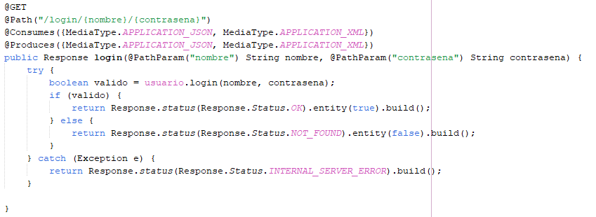
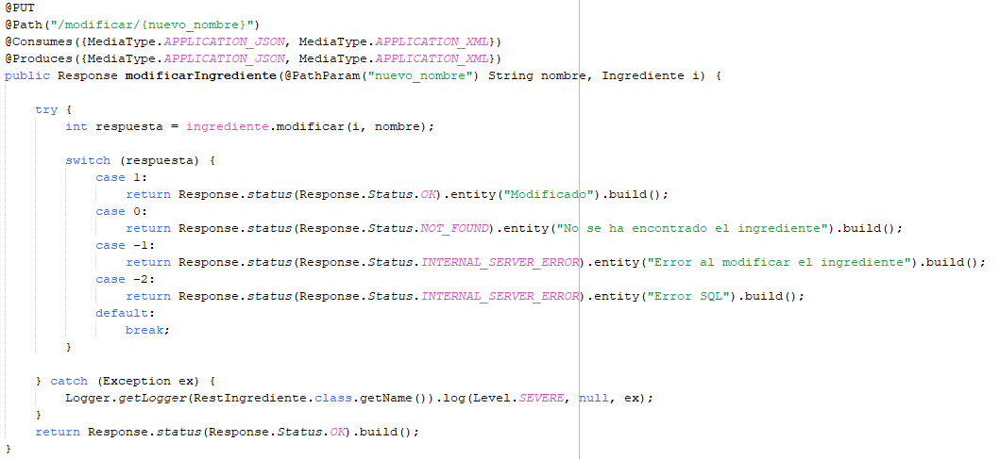
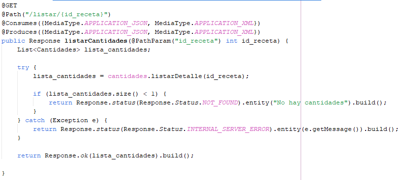
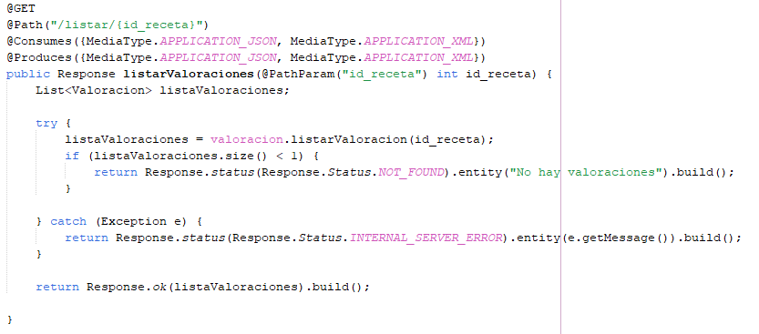

Proposito de la API
Sabores_Secretos es una api RESTful sencilla desarollada en java y hosteada en un servidor de Payara6 que atiende peticiones HTTP para acceder a una base de datos MySQL8, estas peticiones devolveran o consumiran un JSON con los datos de las recetas, usuarios, valoraciones, ETC.
Para acceder a los recursos hay 4 llamadas básicas que implementa REST.
Son las siguientes:
- GET: Recuperar la información de un recurso.
- POST: Crear un nuevo recurso.
- PUT: Actualizar un recurso existente.
- DELETE: Eliminar un recurso.
Rutas principales
Cada entidad de nuestra base de datos tiene una ruta para realizar operaciones CRUD sobre ella.Cada peticion que se realice devolvera un JSON con datos o con alguna respuesta
La ruta principal es nombre_servidor/sabores_secretos/servicios todas las demas rutas son continuaciones de esta
Texto en rojo = path param
-
/usuario
- /crear
- /modificar/contrasena/id_usuario/contraseña_nueva
- /modificar/correo/id_usuario/correo_nuevo
- /modificar/baja/id_usuario
- /modificar/habilitar/id_usuario/contrasena
- /login/nombre/contrasena
-
/receta
- /crear
- /listar
- /borrar/id_receta
- /modificar/descripcion/id_receta/descripcion_nueva
- /modificar/nombre_receta/id_receta/nombre_nuevo
- /modificar/tiempo_receta/id_receta/tiempo_receta_nuevo
- /modificar/numero_comensales/id_receta/numero_comensales_nuevo
- /modificar/categoria/id_receta/categoria_nueva
- /modificar/origen/id_receta/origen_nuevo
- /modificar/privacidad/id_receta/privacidad_nueva
- /modificar/imagen/id_receta
-
/pasosReceta
- /crear
- /listar/id_receta
- /modificar/id_receta/id_paso/nuevo_paso
- /modificar/imagenid_receta/id_paso/nueva_imagen
- /borrar/id_receta/id_paso
-
/ingrediente
- /crear/nombre
- /listar
- /leer/nombre
- /modificar/nuevo_nombre
- /borrar/nombre
-
/cantidades
- /crear
- /listar/id_receta
- /modificar/cantidad/nueva_cantidad
- /modificar/unidad/nueva_unidad
- /borrar/id_receta/id_ingrediente
-
/valoracion
- /crear
- /listar/id_receta
- /modificar/puntuacion/nueva_puntuacion
- /modificar/comentario/nuevo_comentario
- /borrar/id_comentario
Información detallada de las rutas
Todas las llamadas devuelven un mensaje personalizado, por ejemplo, a la hora de mostar errores en la app puedes mostrar directamente los mensajes que devuelve la api. Es una buena opcion si quieres ahorrar tiempo.
Texto en rojo = path param
-
Estructura de datos de usuario
Tipo de Dato Nombre del Dato String id_usuario String contrasena String correo_electronico Byte activo
-
/crear
Esta peticion tiene que llevar un objeto usuario insertado en la cabecera dentro de un JSON, una vez creado devuelve un 201 CREATED
- /modificar/contrasena/id_usuario/contraseña_nueva
-
/modificar/correo/id_usuario/correo_nuevo
Los dos metodos de modificar funcionan igual, le pasas como parametro la id_usuario que quieres modificar y luego el dato nuevo, cuando se realice devolvera un 200 OK.
- /modificar/baja/id_usuario
Con esta llamada damos de baja al usuario para que no pueda loguear mas en la aplicacion, pide como path param el nombre_usuario o correo_usuario, si todo esta en orden devuelve un 200 OK, si no encuentra el usuario devolvera un 404 not found
- /modificar/habilitar/id_usuario/contrasena
Con esta llamada el usuario debera añadir sus credenciales de logueo para poder desbloquear su cuenta, pide el nombre_usuario o correo como path param, y contrasena como path param, si lo encuentra y es todo valido devuelve un 200 OK, sino un 404 not found
-
/login/id_usuario/contrasena
Le pasas como parametro el usuario o correo y la contraseña, si el login es corrrecto y el usuario esta activo devolvera un 200 OK sino un 404 NOT FOUND.

-
/crear
-
Estructura de datos de de la receta
Tipo de Dato Nombre del Dato int id_receta String categoria String descripcion String origen int tiempo_preparacion String nombre_usuario String nombre_receta int numero_comensales byte privacidad String imagen
-
/listar
Devuelve una lista con todas las recetas
-
/crear
Esta peticion tiene que llevar un objeto receta insertado en la cabecera dentro de un JSON, una vez creado devuelve un 201 CREATED
-
/borrar/id_receta
Para borrar la receta debes indicar como path param la id_receta a borrar. Si se ha borrado correctamente devuelve un 200 OK, si no lo encuentra un 404 NOT FOUND
- /modificar/descripcion/id_receta/descripcion_nueva
- /modificar/nombre_receta/id_receta/nombre_nuevo
- /modificar/tiempo_receta/id_receta/tiempo_receta_nuevo
- /modificar/numero_comensales/id_receta/numero_comensales_nuevo
- /modificar/categoria/id_receta/categoria_nueva
- /modificar/origen/id_receta/origen_nuevo
- /modificar/privacidad/id_receta/privacidad_nueva
Todos los metodos de modificar son similares, necesitan la id_receta y el dato nuevo, ambos como path, param para modificar
- /modificar/imagen/id_receta
Para esta peticion hay que indicar la id_receta con un path param y la imagen en base64 debe ir dentro de un objeto receta dentro de la cabecera HTTP en formato JSON

-
/listar
-
Estructura de datos de pasos receta
Tipo de Dato Nombre del dato int id_paso int id_receta int numero_paso String descripcion String imagen
- /crear
Esta peticion tiene que llevar un pasoReceta insertado dentro de la cabecera en un JSON, una vez creado devuelve un 201 CREATED
- /listar/id_receta
Esta peticion te devuelve un JSON con todos los pasos de una receta en concreto
- /modificar/id_receta/id_paso/nueva_descripcion
Esta peticion necesita que le pases como path param la id_receta y la id_paso y la nueva descripcion, una vez realizados los cambios devolvera un 200 OK, si no encuentra la receta o el paso devolvera un 404 NOT FOUND
- /modificar/imagenid_receta/id_paso
Con esta peticion añadimos un /imagen antes de modificar y le indicamos id_receta, id_paso y en la cabecera un objeto pasosReceta que tiene que contener la imagen en base64, si la peticion es exitosa devuelve un 200 OK, si no lo encuentra un 404 not found
- /borrar/id_receta/id_paso
Esta peticiond necesita la id_receta y la id_paso como path param, si el delete es exitoso devolvera un 200 OK, si no lo encuentra un 404 NOT FOUND
-
Estructura de datos de ingrediente
Data Type Variable Name int id_ingrediente String nombre
- /crear/nombre
La peticion de crear ingrediente es distinta a las demas, en este caso solo le indicamos como path param el ingrediente nuevo, esto comprobara si existe un ingrediente con ese nombre en la BD, si no existe lo crea, sino, nos respondera con la id del ingrediente ya existente. En cualquiera de los 2 casos devuelve un 201 CREATED
- /listar
Esta peticion devuelve una lista con todos los ingredientes de la BD
- /leer/nombre
Con esta peticion leemos los datos de un ingrediente en concreto, nos devuelve un objeto entero
- /modificar/nuevo_nombre
Este metodo para modificar tiene que llevar en la cabecera un objeto ingrediente y luego como path param, el nuevo nombre de ingrediente
 - /borrar/nombre
Le pasamos el nombre de ingrediente a borrar como path param y ya estaria. Si es exitoso nos devolvera un 200 OK
-
Estructura de datos de cantidades
Tipo de Dato Nombre del Dato int id_ingrediente int id_receta int cantidad String unidad_medida
- /crear
En esta peticion tiene que ir un objeto cantidades en la cabecera de la peticion en un JSON

- /listar/id_receta
Lista todas las cantidades de una receta pasandole como path param la id_receta
 - /modificar/cantidad/nueva_cantidad
- /modificar/unidad/nueva_unidad
Los dos metodos funcionan de manera similar, primero se les pasa un objeto cantidad con los datos y la nueva cantidad o unidad por un path param
- /borrar/id_receta/id_ingrediente
En esta peticion le pasamos como path param la id_receta y la id_ingrediente para localizar la cantidad en especifico, si el borrado es exitoso nos devuelve un 200 OK, si no la encuentra un 404 NOT FOUND
- /crear
-
Estructura de datos de valoracion
Tipo de Dato Nombre del Dato int id_valoracion int puntuacion String comentario String nombre_usuario int id_receta
- /crear
En esta peticion tiene que ir un objeto valoracion en la cabecera de la peticion en un JSON
- /listar/id_receta
Para listar le metemos la id_receta de la que queremos ver las valoracion y nos devolvera un JSON con una lista, si no hay valoraciones devuelve un 404 NOT FOUND
 - /modificar/puntuacion/nueva_puntuacion
- /modificar/comentario/nuevo_comentario
Las dos formas de modificar son similares, ambas necesitan un obejto valoracion insertado en la cabecera HTTP y el dato de la nueva puntuacion o nuevo comentario ambos como path param
- /borrar/id_comentario
Le pasamos como path param la id del comentario, si el borrado es exitoso devolvera un 200 OK, si no lo es, devolvera un 404 NOT FOUND
Ejemplos de uso
Peticiones a la app con CURL
Los ejemplos son realizados en localhost, una opcion para hacer pruebas es usar NGROK que te proporciona un tunel HTTPS que simula tu localhost para poder realizar pruebas desde fuera de la red
Voy a realizar unas peticiones con el comando CURL desde el terminal para crear un usuario y luego logear con el en la app
curl -X POST -H "Content-Type: application/json" -d @C:\Users\lopez\Desktop\scripts\suario.json http://localhost:8080/sabores_secretos/servicios/usuario/crear
- Como esta peticion solicita un JSON con un objeto usuario, le indico donde encontrarlo en mi ordenador con esta parte del comando -H "Content-Type: application/json" -d @C:\Users\lopez\Desktop\scripts\suario.json
Lo que hay dentro del JSON es un objeto USUARIO con la estructura que se puede ver en la tabla de tipo de datos usuario (el atributo actividad no es necesario porque la BD le va a dar un valor predeterminado) - El siguiente parametro del comando es la ruta para acceder a la peticion -d @C:\Users\lopez\Desktop\scripts\suario.json http://localhost:8080/sabores_secretos/servicios/usuario/crear
- La peticion nos devuelve la id de usuario creado
Vale ahora vamos a ver como funcina la peticion login
curl -XGET http://localhost:8080/sabores_secretos/servicios/usuario/login/usuarioPrueba/passPrueba
- Como podemos ver ahora simplemente ponemos el comando, el tipo de peticion que queremos hacer y la url de la peticion con los path params al final
- Las 2 primeras peticiones son con el usuario y la contraseña la primera es exitsa(devuelve true) y la segunda es fallida (devuelve false)
- En la tercera logeo en vez de con el usuario, con el correo electronico
Esto ha sido una pequeña demostracion de todas las funcionalidades de la api, con practicamente todas las peticiones se actua de una forma similar a la de estos dos objetos
Seguridad
Respecto a la seguridad no hay ningun tipo de validacion de datos en la api es un objetivo a mejorar para siguientes versiones
©SishaSocial team